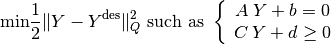
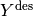

Whole Body control¶
NAOqi Motion - Overview | API | Tutorial
What it does¶
Whole Body Balancer is a powerful tool which gives a very natural and safe motion.
The main goal is to generate and stabilize consistent motions and adapt NAO’s behavior to the situation.
- This tool comes with two main functionalities:
- stabilized motion methods: the goal is to stabilize motion generated by Joint control (and Choregraphe) or Cartesian control:
- safe Cartesian control methods:
How it works¶
Whole Body Balancer¶
It is a Generalized Inverse Kinematics which deals with Cartesian and joint control, balance, redundancy and task priority.
This formulation takes into account all joints of the robot in a single problem. The motion obtained guaranties several specified conditions like balance, keeping a foot fixed ...
Moreover, when asking NAO to reach out his arm, he bends over because arms but also legs joints are taken into account. And he stops before stretching too much in order to keep his balance.
This behavior is automatically managed by Whole Body Balancer. The user only asks NAO to reach out his arm.
HipYawPitch joint coupling is implicitly taken into account in the balancer.
Whole Body Balancer - detailed¶
The Generalized Inverse Kinematics problem is written as a quadratic program which is solved every 20 ms using the C++ open source library qpOases1.
The classical form of a quadratic program is:

 : Unknown vector;
: Unknown vector;- : Desired but not necessarily feasible solution;
 : Quadratic norm;
: Quadratic norm; ,
,  ,
,  and
and  : Matrices and vectors which
express linear equality and inequality constraints.
: Matrices and vectors which
express linear equality and inequality constraints.
In our case, the unknown vector is composed of:
- Velocity of torso. It is an unactuated body with 6 degrees of freedom (3 translations, 3 rotations);
- Velocity of all the articulated joints. LHand and RHand are not taken into account because they are not part of a kinematics chain. Moreover, LHipYawPitch and RHipYawPitch are mapped to a single variable because these articulations are controlled by only one actuator.
The equality constraints are about keeping feet fixed or in a plane.
The inequality constraints are:
- Joint limits. These constraints are always taken into account;
- Balance. The Center Of Mass is constrained to stay within the support polygon. We can activate/deactivate this constraint and specify the support polygon.
Ydes is composed of:
- Cartesian desired trajectories.
- Articular desired trajectories.
These orders are not necessarily feasible and may even contradict. The solution obtained is feasible (it fulfills all the constraints) and is a compromise between the desired motions.
1 H.J. Ferreau, H.G. Bock and M. Diehl, ”An online active set strategy to overcome the limitation of explicit MPC,” IEEE - International Journal of Robust and Nonlinear Control, pp. 816-830, 2008.
Getting started¶
When use it¶
Whole Body Balancer can be used with every joint control (angle interpolation, Choregraphe Timeline) and effector control.
There are two exceptions when Whole Body balancer can not be used:
- during walk.
- if the robot is not standing on his feet (see ALRobotPosture).
How to activate/deactivate it¶
The Whole Body Motion is by default deactivated on the robot. The following example show how to activate it.
# Example showing how to active Whole Body Balancer.
isEnabled = True
proxy.wbEnable(isEnabled)
Warning
Take care to deactivate Whole Body Balancer at the end of your behavior.
Use Cases¶
During joint control (Choregraphe Timeline for example), motion can be stabilized by Whole Body balancer. Consequently, initial motion is modified to the closest motion which respects balance and/or foot state.
Whole Body balancer has to be activated to use the following function (ALMotionProxy::wbEnable()).
Case 1: Feet Condition¶
This api sets the foot state:
- Fixed: the 6 Cartesian degrees of freedom are constrained. The foot are completely fixed.
- Plane: it constrains the foot in the plane. The following Cartesian axis are constrained (Z, Wx, Wy). Foot can move in X, Y and Wz axis.
- Free: the foot can move in all the Cartesian axis.
# Example showing how to fix the feet.
stateName = "Fixed"
supportLeg = "Legs"
proxy.wbFootState(stateName, supportLeg)
# -*- encoding: UTF-8 -*-
''' Whole Body Motion: Foot State '''
import sys
import math
from naoqi import ALProxy
def StiffnessOn(proxy):
# We use the "Body" name to signify the collection of all joints
pNames = "Body"
pStiffnessLists = 1.0
pTimeLists = 1.0
proxy.stiffnessInterpolation(pNames, pStiffnessLists, pTimeLists)
def main(robotIP):
''' Example of a whole body FootState
Warning: Needs a PoseInit before executing
Whole body balancer must be inactivated at the end of the script
'''
# Init proxies.
try:
proxy = ALProxy("ALMotion", robotIP, 9559)
except Exception, e:
print "Could not create proxy to ALMotion"
print "Error was: ", e
try:
postureProxy = ALProxy("ALRobotPosture", robotIP, 9559)
except Exception, e:
print "Could not create proxy to ALRobotPosture"
print "Error was: ", e
# Set NAO in Stiffness On
StiffnessOn(proxy)
# Send NAO to Pose Init
postureProxy.goToPosture("StandInit", 0.5)
# Activate Whole Body Balancer.
isEnabled = True
proxy.wbEnable(isEnabled)
# Legs are constrained in a plane
stateName = "Plane"
supportLeg = "Legs"
proxy.wbFootState(stateName, supportLeg)
# HipYawPitch angleInterpolation
# Without Whole Body balancer, foot will not be keeped plane.
names = "LHipYawPitch"
angleLists = [-45.0, 10.0, 0.0]
timeLists = [3.0, 6.0, 9.0]
isAbsolute = True
angleLists = [angle*math.pi/180.0 for angle in angleLists]
proxy.angleInterpolation(names, angleLists, timeLists, isAbsolute)
# Deactivate Whole Body Balancer.
isEnabled = False
proxy.wbEnable(isEnabled)
if __name__ == "__main__":
robotIp = "127.0.0.1"
if len(sys.argv) <= 1:
print "Usage python motion_wbFootState.py robotIP (optional default: 127.0.0.1)"
else:
robotIp = sys.argv[1]
main(robotIp)
Case 2: Balance Constraint¶
# Example showing how to Constraint Balance Motion.
isEnable = True
supportLeg = "Legs"
proxy.wbEnableBalanceConstraint(isEnable, supportLeg)
At least, a foot has to be constrained. The following combination are allowed:
- wbEnableBalanceConstraint(True, “Legs”) with:
- wbFootState(“Fixed”, “Legs”)
- wbFootState(“Fixed”, “LLeg”) and wbFootState(“Plane”, “RLeg”)
- wbFootState(“Fixed”, “RLeg”) and wbFootState(“Plane”, “LLeg”)
- wbEnableBalanceConstraint(True, “LLeg”) with:
- wbFootState(“Fixed”, “Legs”)
- wbFootState(“Fixed”, “LLeg”) and wbFootState(“Fixed”, “RLeg”)
- wbFootState(“Fixed”, “LLeg”) and wbFootState(“Plane”, “RLeg”)
- wbFootState(“Fixed”, “LLeg”) and wbFootState(“Free” , “RLeg”)
- wbEnableBalanceConstraint(True, “RLeg”) with:
- wbFootState(“Fixed”, “Legs”)
- wbFootState(“Fixed”, “RLeg”) and wbFootState(“Fixed”, “LLeg”)
- wbFootState(“Fixed”, “RLeg”) and wbFootState(“Plane”, “LLeg”)
- wbFootState(“Fixed”, “RLeg”) and wbFootState(“Free” , “LLeg”)
Warning
motion_wbEnableBalanceConstraint.py
# -*- encoding: UTF-8 -*-
''' Whole Body Motion: Enable Balance Constraint '''
import sys
import math
from naoqi import ALProxy
def StiffnessOn(proxy):
# We use the "Body" name to signify the collection of all joints
pNames = "Body"
pStiffnessLists = 1.0
pTimeLists = 1.0
proxy.stiffnessInterpolation(pNames, pStiffnessLists, pTimeLists)
def main(robotIP):
''' Example of a whole body Enable Balance Constraint
Warning: Needs a PoseInit before executing
Whole body balancer must be inactivated at the end of the script
'''
# Init proxies.
try:
motionProxy = ALProxy("ALMotion", robotIP, 9559)
except Exception, e:
print "Could not create proxy to ALMotion"
print "Error was: ", e
try:
postureProxy = ALProxy("ALRobotPosture", robotIP, 9559)
except Exception, e:
print "Could not create proxy to ALRobotPosture"
print "Error was: ", e
# Set NAO in Stiffness On
StiffnessOn(motionProxy)
# Send NAO to Pose Init
postureProxy.goToPosture("StandInit", 0.5)
# Activate Whole Body Balancer
isEnabled = True
motionProxy.wbEnable(isEnabled)
# Legs are constrained in a plane
stateName = "Fixed"
supportLeg = "Legs"
motionProxy.wbFootState(stateName, supportLeg)
# Constraint Balance Motion
isEnable = True
supportLeg = "Legs"
motionProxy.wbEnableBalanceConstraint(isEnable, supportLeg)
# KneePitch angleInterpolation
# Without Whole Body balancer, foot will fall down
names = ["LKneePitch", "RKneePitch"]
angleLists = [ [0.0, 40.0*math.pi/180.0], [0.0, 40.0*math.pi/180.0]]
timeLists = [ [5.0, 10.0], [5.0, 10.0]]
isAbsolute = True
motionProxy.angleInterpolation(names, angleLists, timeLists, isAbsolute)
# Deactivate Whole Body Balancer
isEnabled = False
motionProxy.wbEnable(isEnabled)
if __name__ == "__main__":
robotIp = "127.0.0.1"
if len(sys.argv) <= 1:
print "Usage python motion_wbEnableBalanceConstraint.py robotIP (optional default: 127.0.0.1)"
else:
robotIp = sys.argv[1]
main(robotIp)
Case 3: Safe Cartesian Control¶
It is a user friendly API which enables whole body Cartesian control of an effector:
- Head Orientation
- LArm/RArm Position.
It is useful for reactive behavior. User can update the target (Head Orientation, Arm Position) and motion is safe and smooth using a SE3 Interpolation.
How it works¶
The effector target is reached following the next conditions:
- Keep the two feet fixed and on the ground
- Keep balance
- Redundancy: reach the target by keeping as possible an init pose.
How to use it¶
Note
Do an init posture before using this api.
First of all, choose the effector you want to control, with the api wbEnableEffectorControl. It implicitly activates Whole Body Balancer.
# Example showing how to active Head tracking.
effectorName = 'Head'
isEnabled = True
proxy.wbEnableEffectorControl(effectorName, isEnabled)
Update as you want the target with api wbSetEffectorControl:
- Head is controlled in rotation (WX, WY, WZ) (radian).
- LArm and RArm are controlled in position (X, Y, Z) (meter).
TargetCoordinate must be absolute and expressed in FRAME_ROBOT.
If the desired position/orientation is unfeasible, target is resized to the nearest feasible motion.
# Example showing how to set orientation target for Head tracking.
effectorName = "Head"
targetCoordinate = [0.1, 0.0, 0.0]
proxy.wbSetEffectorControl(effectorName, targetCoordinate)
At last, think to disable effector control.
# Example showing how to deactivate Head tracking.
effectorName = 'Head'
isEnabled = False
proxy.wbEnableEffectorControl(effectorName, isEnabled)
Examples¶
Head Orientation: motion_wbEffectorControlHead.py
Arm Position: motion_wbEffectorControlArm.py